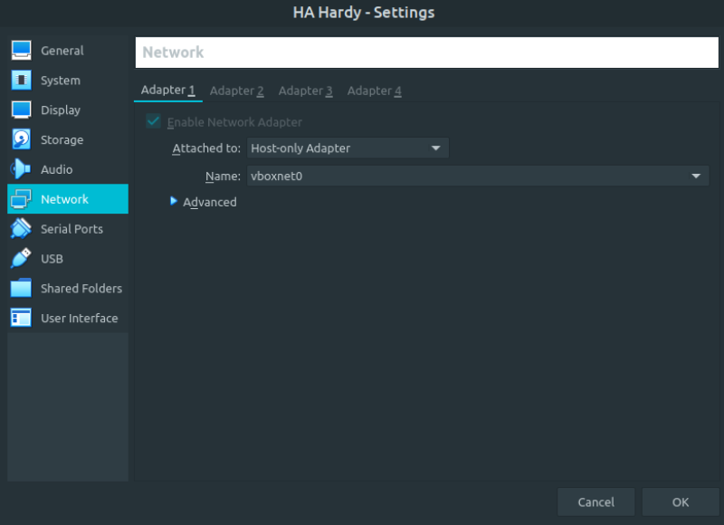
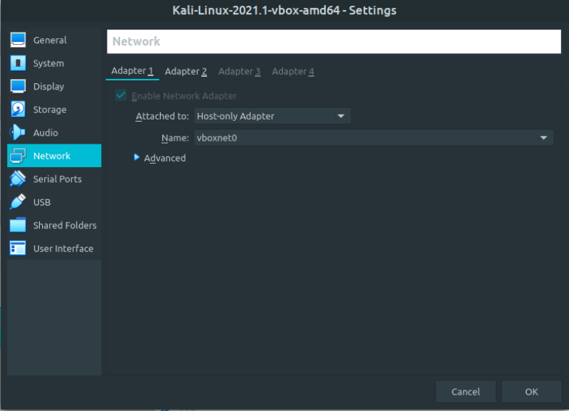
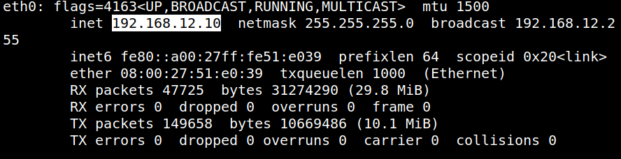
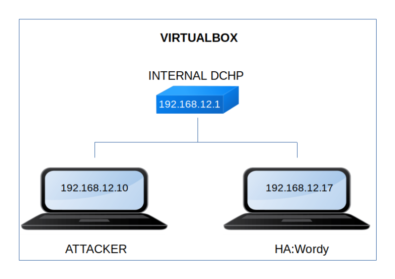

HA: Wordy
▸ HA: Wordy
▸ 1. Scan Network
▸ 2. Finding Services and Ports
▸ 3. Enumerate
▸ 4. Exploiting Reflex Gallery
▸ 5. Privilege Escalation
▸ 5.1 Catch the flag 1
▸ 5.2 Check for any file having SUID permissions
▸ 5.3 Create a new user
▸ 6. Catch the flag 2
Difficulty: Intermediate.
Flag: 2 flaga.
Learning:
Network Scanning
• Host IP (Netdiscover)
• Open Port & Services (Nmap)
Enumeration
• Web Directory Brute force (Dirb)
• Scanning WordPress (Wpscan)
Exploiting Reflex Gallery (1st Method: file Upload)
• Spawning Shell (Metasploit)
• Capture the 1st flag
Privilege Escalation
• Abusing SUID Binaries
• Capture 2nd Flag
• Download: https://drive.google.com/file/d/12xYaVWGVfnZAFxWCX7n5YuGRiJVHHEkK/view?usp=sharing
• Download (Mirror): https://download.vulnhub.com/ha/ha-wordy.ova
• Download (Torrent): https://download.vulnhub.com/ha/ha-wordy.ova.torrent
Install the machine on VirtualBox:
1. Download the file.
2. On Virtualbox choose File->Import Appliance.
3. Select the file “ova”.
4. Accept to import.


Watch your Machine IP.
$ ifconfig
Output:

Diagram
